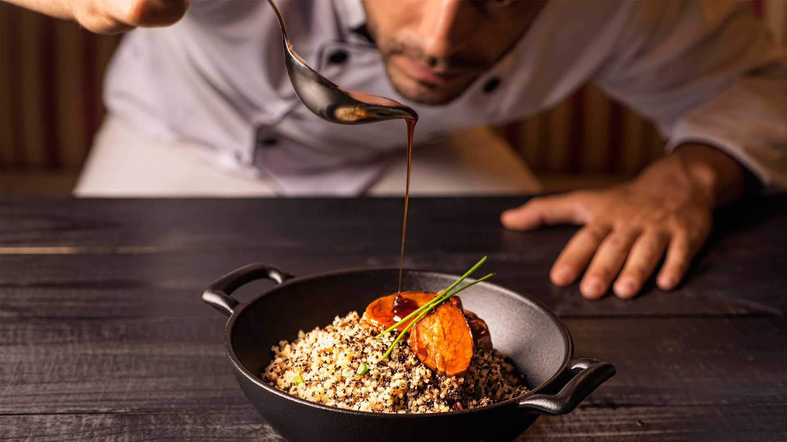

-

Chef internacional.
-
 Bebidas y tragos exoticos.
Bebidas y tragos exoticos. -
 Lo mejor de la gastronomia peruana.
Lo mejor de la gastronomia peruana.
Ven y disfruta de nuestros esquisitos platillos preparados por chefs internacionales